Quand TikTok et les algorithmes redessinent la démocratie
Colloque des Sciences humaines — CEGEP Ahuntsic
15 avril 2026
Le monde d’avant
Le Téléjournal — Radio-Canada
La marche du progrès…
Combien de nouvelles vous connaissiez cette semaine, avant d'écouter votre Alexpress du samedi? 📰 📺 🧥: @womance en #collaboration ✍️ : Sophie Mediavilla-Rivard 💻 : Julien Cloutier Labbé
… et sa nouvelle élite informationnelle
suis-je le seul à être confu? 😅 #quebec
TikTok et Démocratie
Si vous ne devez retenir que trois choses :
- 🏛️ L’information est le socle de la démocratie. Quand ce socle est contrôlé par un algorithme opaque, la démocratie est en danger. La préserver exige d’abord la transparence, puis la régulation.
- 📱 Sur TikTok, l’algorithme est le rédacteur en chef. Il décide ce que vous voyez, et par ricochet, ce que les créateurs produisent.
- ⭐ TikTok incarne le nouveau rêve américain : tout le monde peut publier, mais 5 % des comptes captent 93 % de l’attention.
Plan
Pourquoi les médias conditionnent la qualité démocratique.
Nouveau format, nouveau rôle algorithmique, nouveau type de contenu politique.
Sélection des cas et méthodes computationnelles.
Premiers résultats d'une étude en cours.
Qui suis-je ?
Fonctions
- Professeur adjoint de science sociale computationnelle auprès du département de Science Politique (Université Laval)
- Chercheur affilié au Centre d’étude politique des réseaux sociaux et de l’IA à NYU (États-Unis)
- Précédemment : PhD à Konstanz (Allemagne), Ingénieur de recherche chez Meta
Intérêts de recherche
- Technologie et politique
- Représentation démocratique
- Science des données
Acte 1 — Comment les médias façonnent la démocratie ?
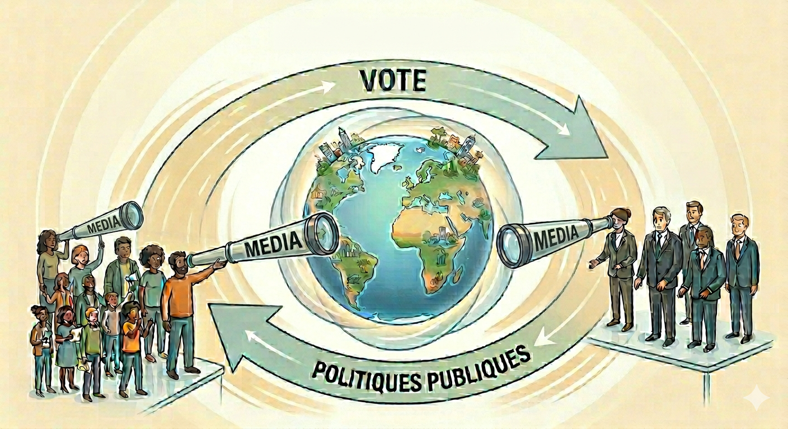
Information et démocratie
Flux informationnels fonctionnels
- Agrégation des préférences
- Attribution des priorités
- Responsabilité des gouvernements
Les médias, souvent régulés nationalement, sont les garants de la qualité de ces flux informationnels.
En jouant le rôle de lunette pour les gouvernements et les citoyens, les médias constituent une pierre angulaire des systèmes politiques, conditionnant la qualité démocratique.
Deux fonctions des médias
1. Informationnelle
Faire circuler une information de qualité
Le contenu.
2. Attentionnelle
Distribuer notre attention entre sujets et acteurs
Qui / quoi on en parle.
Les deux fonctions sont conjointement requises pour permettre à une démocratie de bien fonctionner.
« Les médias ne nous disent pas quoi penser, mais ils sont remarquablement efficaces pour nous dire à quoi penser. » — Bernard Cohen, 1963
TikTok transforme les deux fonctions simultanément.
Un écosystème médiatique idéal ?
- Cohérent — une réalité commune partagée
- Pluraliste et inclusif — une diversité de voix
- Fiable — on peut remonter à la source
- Accessible — tout le monde peut y accéder
Récapitulatif 1
- Médias = lunettes de la démocratie
- Deux fonctions : informer + distribuer l’attention
- Un bon écosystème : cohérent, pluraliste et inclusif, fiable, accessible
→ Qu’est-ce que TikTok change ?
Acte 2 : Ce que TikTok change
Est-ce que TikTok est si important pour la politique ?
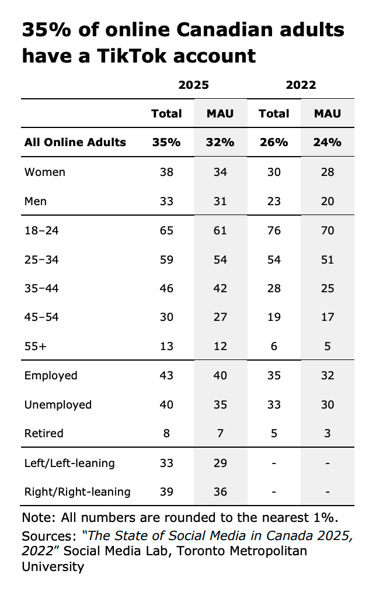
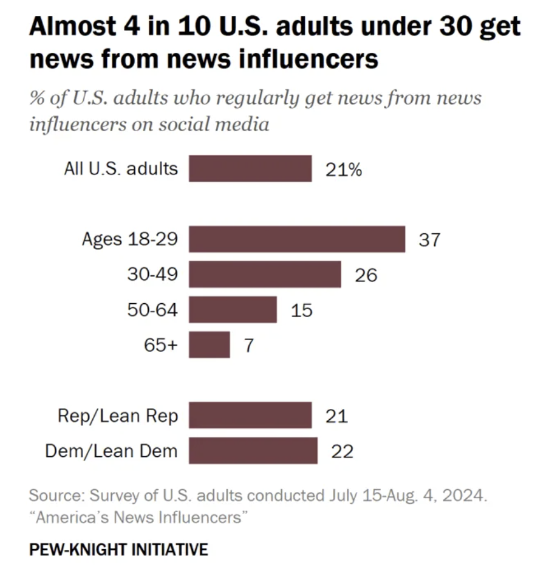
Pour les jeunes, les lunettes démocratiques
sont de plus en plus celles contrôlées par TikTok.
TikTok en 3 caractéristiques
📹
Vidéo verticale
Pas de texte
⏱️
Format court
≤ 60 secondes
🧠
Recommandation algorithmique
La plateforme
choisit, pas vous
Trois détails qui, ensemble, ont des conséquences profondes pour la démocratie.
Algorithme de recommandation
Algorithme de recommandation = un programme qui décide, pour chaque utilisateur, quelles vidéos montrer et dans quel ordre.
Sur Facebook, on voyait ce que produisaient nos « amis ».
Sur TikTok, on voit ce qui nous intéresse, tels qu’interprétés par la plateforme.
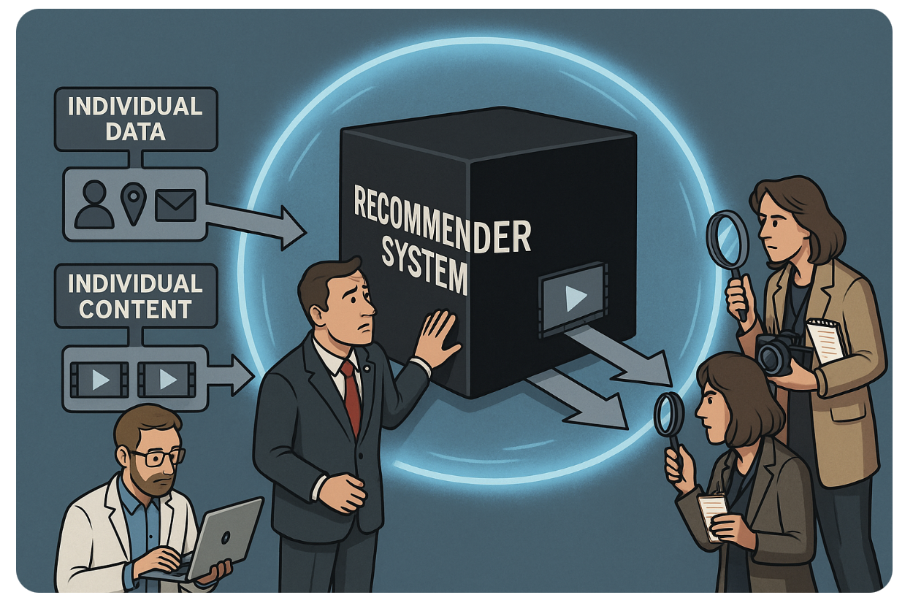
Pourquoi le format court change tout ?
- Coûts de production ↓ — n’importe qui peut produire
- Attention disponible ↑ — plus de vues par personne
- Granularité des données ↑ — l’algorithme apprend vite ce qui t’accroche
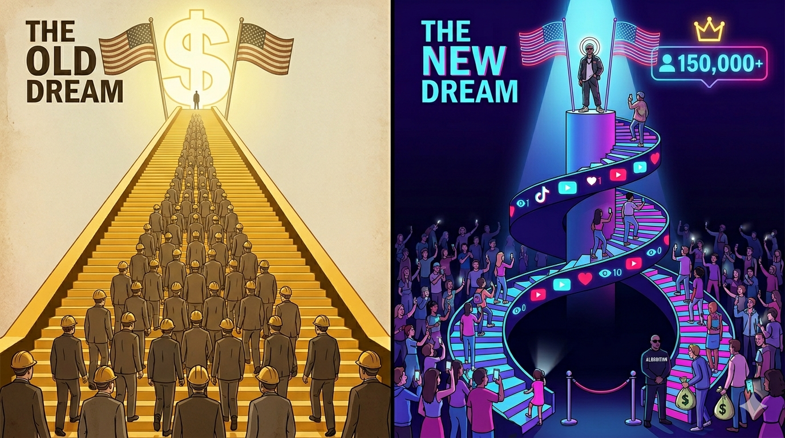
La dialectique format court et algorithme
permet l'algorithme
(granularité des données)
le format court
(sinon : noyade dans le bruit)
🔄 Chacun est rendu viable par l’autre.
Conséquences immédiates
- Contenus plus addictifs
- Prime au sensationnel (3 secondes pour accrocher)
- La plateforme régule l’attention et contrôle qui et quoi est visible
- Les producteurs se soumettent au diktat de la plateforme
« So whether it’s distraction, addiction, social isolation, extremism, outrage, narcissism, disinformation, affirmation, polarization, these are all not accidents, but natural consequences of the race for attention. » — Tristan Harris (ex-Google, fondateur du Center for Humane Technology)
TikTok : simple reformatage médiatique ?
« The medium is the message. » — Marshall McLuhan (1964)
- Reformater signifierait conserver les contenus et les présenter différemment
- Mais TikTok, en changeant le format, transforme les incitatifs de production, invitant à produire d’autres messages
Mythes médiatiques sur TikTok
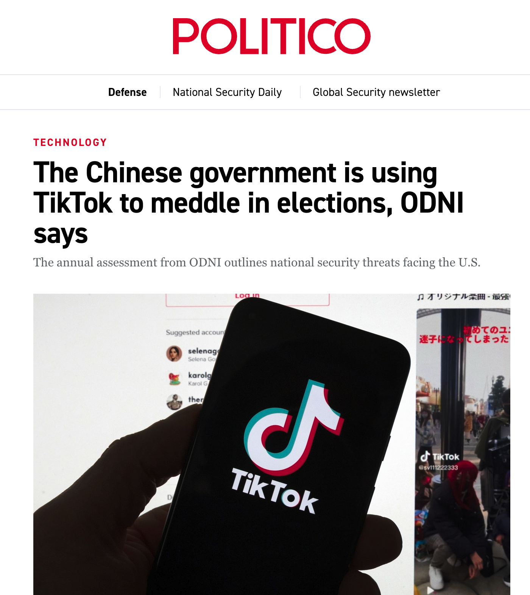
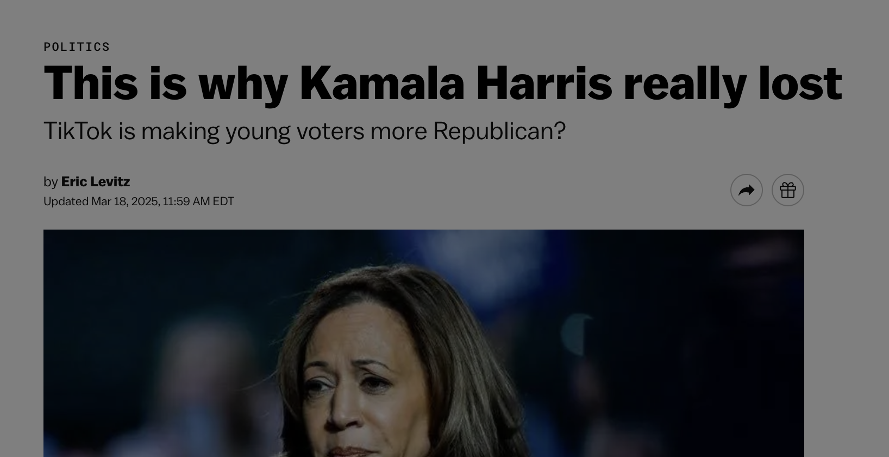
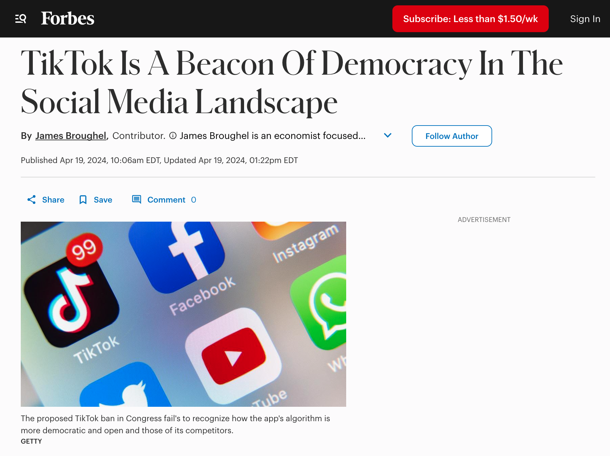
Est-ce que TikTok favorise la démocratie ?
| Mécanisme | Opportunité | Risque |
|---|---|---|
| Coût de production faible | Démocratisation, inclusivité | Pas de déontologie, désinformation, attention-bait |
| Algorithme choisit pour vous | Découverte hors de sa bulle | Manipulation possible |
| Divertissement + politique | Élargit le public politisé | Accélération des cycles d'info, réduction de la densité d'information |
« First Law of Technology: Technology is neither good nor bad; nor is it neutral. » — Melvin Kranzberg, 1986
Récapitulatif acte 2
- Beaucoup de mythes urbains, peu de preuves empiriques
- TikTok transforme la production, la distribution et la réception de l’information politique
- L’effet sur la démocratie est flou, démontrant le besoin d’une intervention scientifique
Acte 3 — Comment étudier scientifiquement TikTok ?
Sciences sociales computationnelles
Notre travail en 3 temps
- Construire un narratif cohérent (argument théorique)
- Le traduire en observations testables
- Collecter les données pour valider ou infirmer
Un exemple
Question : Est-ce que le gouvernement chinois manipule l’algorithme ?
- Narratif : S’il en a la possibilité, il a en réalité intérêt à restreindre les manipulations au strict minimum
- Observation testable : Les contenus anti-PCC obtiennent le même engagement que les contenus pro-PCC
- Test empirique : TBD
Pourquoi TikTok et pas les autres ?
Logique de sélection des cas : TikTok comme exemple des plateformes modernes
- Pionnière imitée par les autres
- Adoption massive et globale (hors Russie, Inde et Chine)
- Importance stratégique dans le débat public due aux liens avec la Chine
Ce qu’on apprend sur TikTok éclaire aussi YouTube, Snapchat, etc…
Théorie vs. empirie
- Construire une théorie requiert peu de moyens (une feuille et un crayon)
- Souvent, c’est tester la théorie qui est très compliqué (comme en physique, biologie ou médecine)
Deux défis majeurs :
- Collecter les données
- Mesurer les concepts clés
Défi 1 — Obtenir les données
| Phénomène cible | Instrument de mesure | Données de population | |
|---|---|---|---|
| Sciences sociales traditionnelles | % de Montréalais en faveur de la régulation des loyers | Sondage aléatoire | Données du recensement |
| Plateformes numériques | % de vidéos politiques au Québec | Catégorisation d'un échantillon aléatoire | ❌ PAS de recensement |
Défi 1 : la méthode d’énumération
Chaque TikTok est associé à un ID numérique (très grand nombre), qui croît avec le temps.
- Stratégie : tester chaque nombre possible
- De cette façon, on recense l’ensemble des TikTok produits sur la planète
- Résultat : un catalogue quasi-complet de la production mondiale
Défi 1 : collecte quotidienne
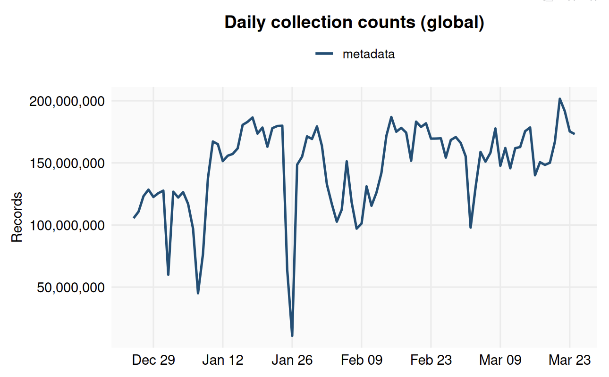
Pour des raisons techniques, le recensement n’est pas complet, mais représente un échantillon aléatoire d’environ 80 %.
Défi 1 : Que faire après avoir recensé la population ?
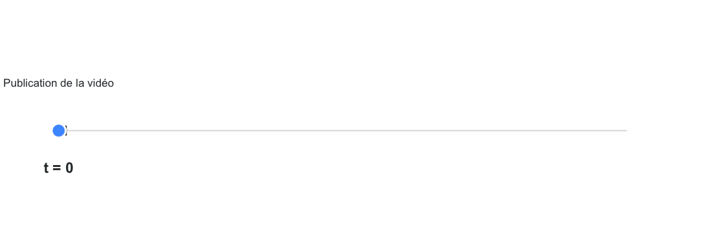
Obtenir les données n’est qu’un des deux défis.
Une fois collectées, il s’agit de les analyser — ce qui requiert des instruments de mesure.
Défi 2 : mesurer
- 📏 Longueur d’un meuble ? → Ruban à mesurer
- 💰 Revenu médian ? → Données fiscales
- 🧪 pH acide/basique ? → Test de pH
- Caractère politique d’une vidéo TikTok ? → ❓❓❓
On doit construire l’instrument de mesure avant de pouvoir analyser.
Défi de mesure 1 — Contenu politique
Trad-wife
My day at the office 😘🏠 #mom #sahm #sahmlife #tradwife #homemaking #reallife #motherhood #homeschool #homeschooling
Défi de mesure 1 — Dogwhistle
Dogwhistle
To be clear I don't think raw milk has magic properties and yes it can have risks. I drink alexandres pasteurized dairy or kalona or strauss pasteurized dairy and I think it's great. I also sometimes get raw milk cause it tastes good to me. I have never gotten sick from drinking raw milk. Does this mean it's a food with 0 risk? No. Raw food always has risks. I've gotten sick eating sushi, oysters, and lettuce before. So if you're concerned about the risk just get pasteurized dairy you'll still get the health benefits of milk. #santacruzmedicinals #debate
Défi de mesure 2 — Orientation idéologique
Description ≠ contenu
Hegseth: Typical NBC sort of gotcha type question. President Trump has all the latitude in the world to talk about how long it may or may not take—four weeks, two weeks, six weeks. It could move up. It could move back. We're going to execute at his command the objectives we've set out to achieve. He has all the latitude, and I'm glad he does because there's no better communicator than our president expressing those things.
Le bannissement furtif (Shadowbanning)
Technique de modération visant à beaucoup moins diffuser une vidéo sans notifier le producteur.
Problème : L’invisibilité du phénomène rend la mesure presque impossible.
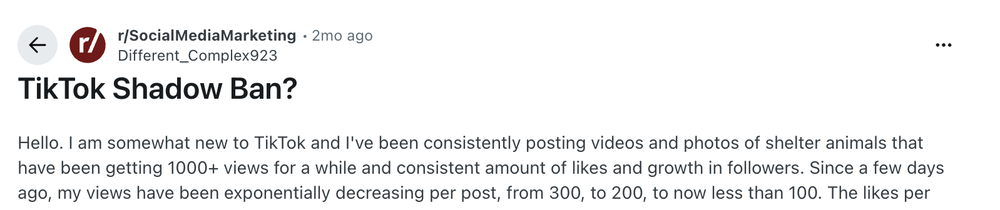
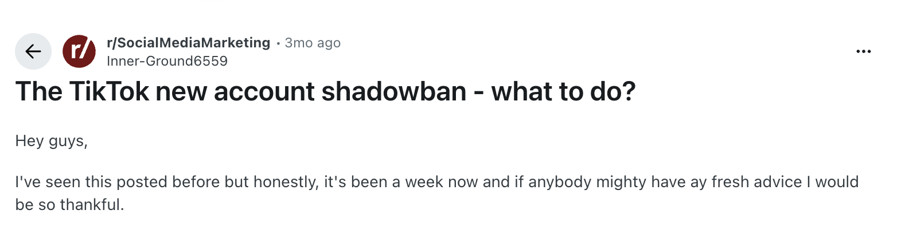
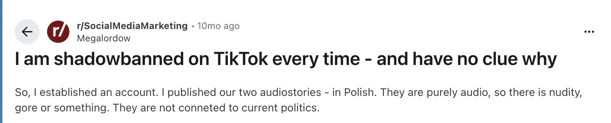
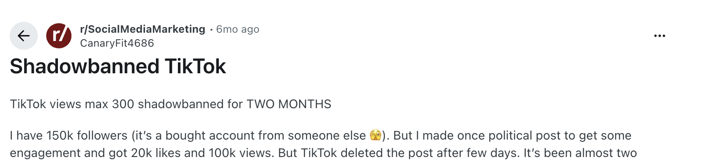
Défi de mesure 3 — Le bannissement furtif
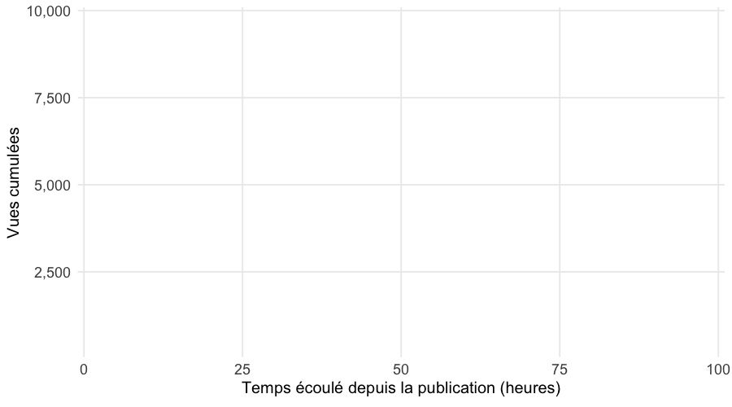
Défi de mesure 3 — Le bannissement furtif
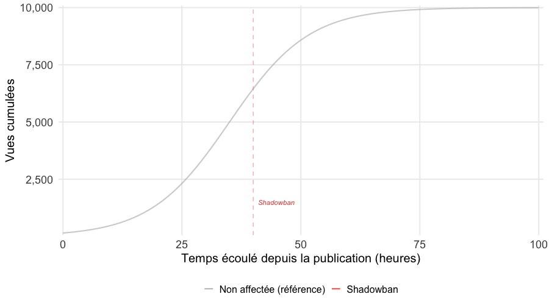
Notre solution : Modéliser le trajet attendu d’une vidéo et le comparer au trajet observé.
Défi de mesure 4 — IA comme instrument général
- Millions de vidéos → impossible une par une
- L’IA transcrit, classifie, détecte à grande échelle
- Ne remplace pas le jugement humain : elle le met à l’échelle
⚠ MAIS ATTENTION : biais potentiels et souvent les coûts sont prohibitifs
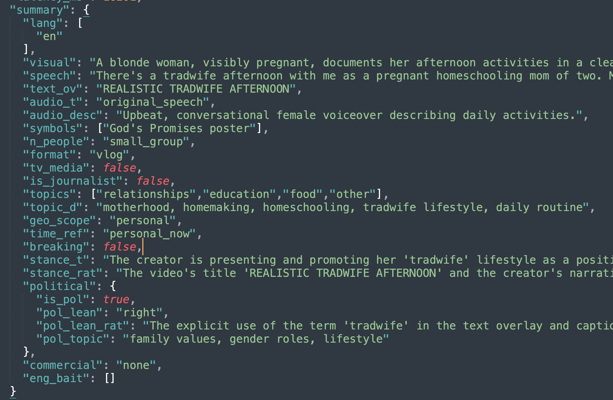
Acte 4 — L’offre politique sur TikTok aux États-Unis
Une étude en cours de finalisation
Contenu politique sur TikTok aux États-Unis
Objectif : descriptif
Avant d’expliquer, il faut pouvoir décrire.
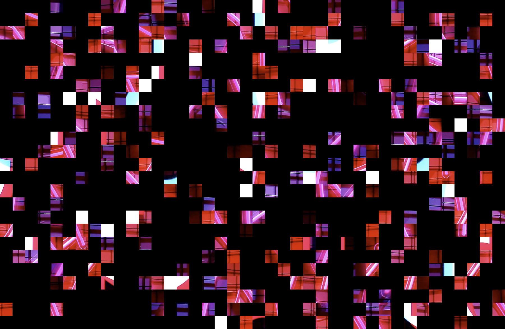
3 questions directrices
- Combien de contenu politique est publié ?
- Quelle est la concentration de l’attention ?
- Qui attire cette attention ?
Résultat 1 — L’attention politique est ponctuée

Résultat 1 — Le marché des thèmes
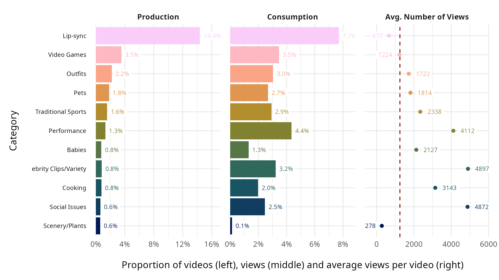
Résultat 1 — Un engagement disproportionné
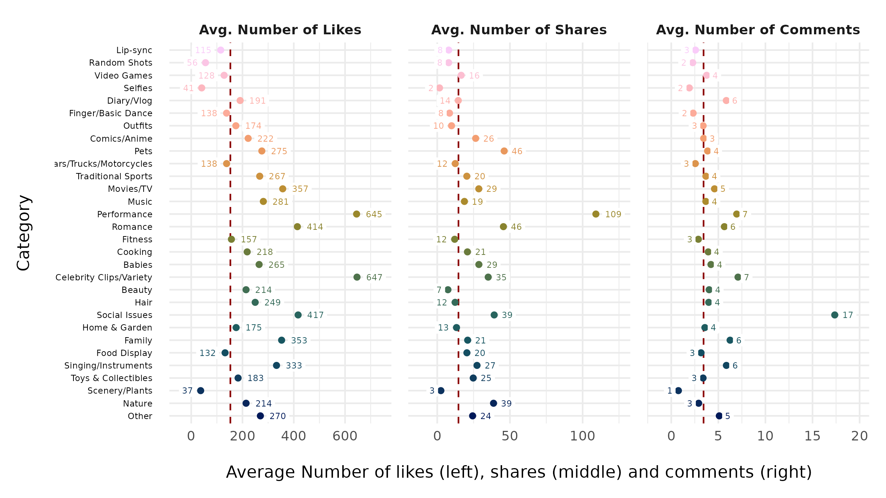
Résultat 2 — Une oligopole de l’attention
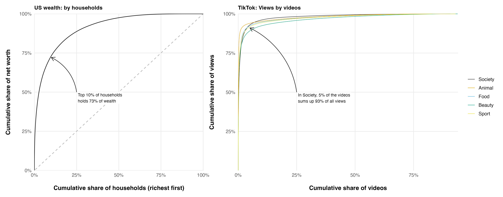
Résultat 2 — Une oligopole de l’attention
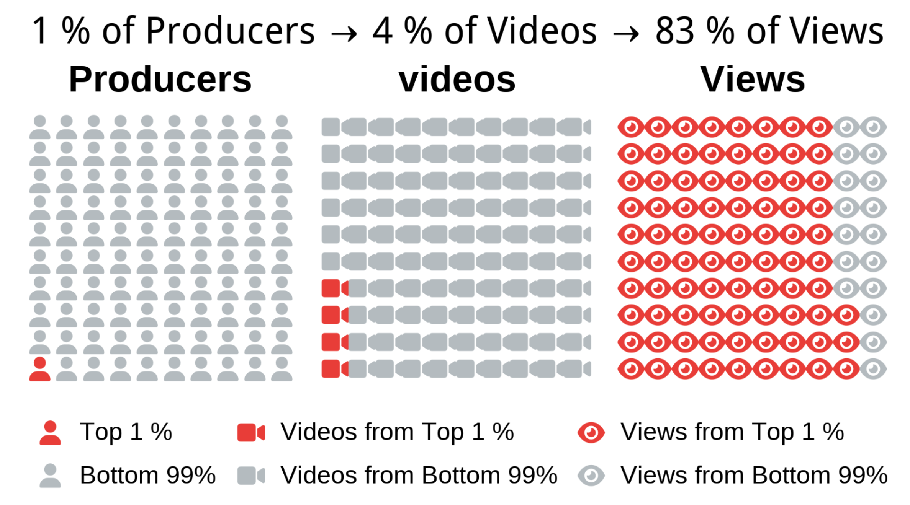
Résultat 3 — Qui sont les producteurs ?
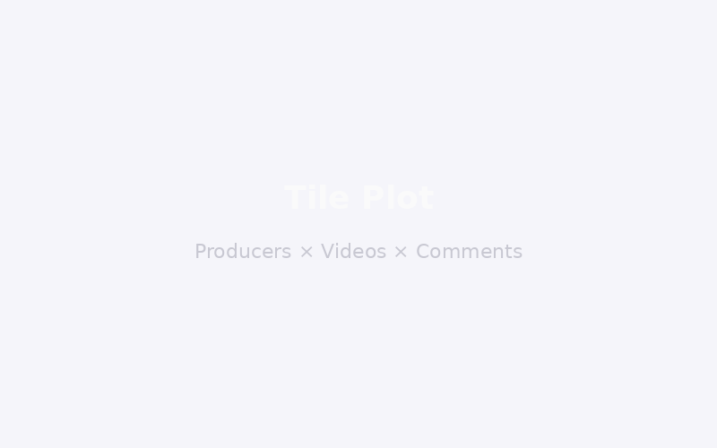
Ce qu’il faut retenir
Pour aller plus loin
Tarleton Gillespie. Custodians of the Internet. 2018.
La modération de contenu est le vrai pouvoir des plateformes — un pouvoir éditorial massif exercé sans transparence.Safiya Umoja Noble. Algorithms of Oppression. 2018.
Les moteurs de recherche reproduisent et amplifient les biais racistes et sexistes sous une façade de neutralité technique.Shoshana Zuboff. The Age of Surveillance Capitalism. 2019.
Les géants du numérique extraient et monétisent l’expérience humaine, créant un capitalisme fondé sur la prédiction des comportements.Kate Crawford. Atlas of AI: Power, Politics, and the Planetary Costs of Artificial Intelligence. 2021.
L’IA n’est pas immatérielle — elle repose sur l’extraction de ressources naturelles, de travail humain précaire et de données personnelles.Eunji Kim. The American Mirage: How Reality TV Upholds the Myth of Meritocracy. 2025.
La téléréalité renforce la croyance en la méritocratie, masquant les inégalités structurelles.
Intéressés par les impacts sociaux de TikTok, de l’IA et des technologies non-inventées ? Rejoignez-nous !
Université Laval — CEGEP Ahuntsic — Avril 2026